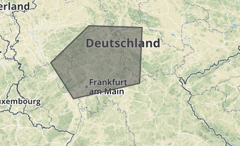

GeoJSON PIP API
Given a set of polygons and a point, this API checks wheter the point falls whithin one of polygons or not. This problem is well-known in computational geomtry as point-in-polygon (PIP) problem. The acceptable format for both point and area is the standardized GeoJson format.
GeoJSON is a format for encoding a variety of geographic data structures. It supports the following geometry types: Point, LineString,
Polygon, MultiPoint, MultiLineString, and MultiPolygon. Geometric
objects with additional properties are Feature objects. Sets of features are
contained by FeatureCollection objects.
This API only accepts FeatureCollection. The collection must be composed of
one or more Polygon. The following example shows an acceptable GeoJSON's FeatureCollection for the API:
{ "type": "FeatureCollection", "features": [{ "type": "Feature", "properties": {},
"geometry": { "type": "Polygon", "coordinates": [ [
[ 7.36083984375, 50.666872321810715 ],
[ 8.19580078125, 49.82380908513249 ], [ 10.634765625, 50.190967765585604 ],
[ 10.72265625, 51.481382896100975 ], [ 8.76708984375, 51.52241608253253 ],
[ 7.36083984375, 50.666872321810715 ] ] ] } }]}
The above example is composed of a polygon area which is highlighted in the map, as follows:
Version 1 (v1)
Version 1 uses rgeo library to process incoming GeoJSON data and to calculate wheter the point falls whithin the area or not.
It has two basic endpoints i.e., contains and areas.
1. areas endpoint
- Accepts GeoJson's
FeatureCollectionas param - It supports
POSTmethod. - The path is
/api/v1/areas. - Returns result
Arraywith theidof area, if operation is successful - It returns
422error if it can not parse the input
The following example shows such operation:
curl -d '{ "type": "FeatureCollection", "features": [{ "type": "Feature",
"properties": {}, "geometry": { "type": "Polygon", "coordinates": [ [
[ 7.36083984375, 50.666872321810715 ], [ 8.19580078125, 49.82380908513249 ],
[ 10.634765625, 50.190967765585604 ], [ 10.72265625, 51.481382896100975 ],
[ 8.76708984375, 51.52241608253253 ], [ 7.36083984375, 50.666872321810715 ] ] ]
} }]}' -X POST -H "Content-Type: application/json"
https://warm-tor-85726.herokuapp.com/api/v1/areas
The result of the above request is as follows:
{"result":[{"id":3}],"message":"Geo_json recieved; please keep the ID for ..."}
2. contains endpoint
- Accepts GeoJson's
Pointas param. - It supports
POSTmethod. - The path is
/api/v1/contains/id. Whereidis equal to the id of the area. - Returns result
Arraywith{"inside":true}if point is within the area and{"inside":false}if not - It returns
422error if it can not parse the input.
The following example shows such operation:
curl -d '{"type": "Feature", "geometry": { "type": "Point", "coordinates":
[8.780030, 50.240719] }, "properties": { "name": "test" }}' -X POST -H "Content-Type:
application/json" https://warm-tor-85726.herokuapp.com/api/v1/contains/3
The result of the above request is as follows:
{"result":[{"inside":true}],"message":"Opreation was successful"}
The message part of the response in each endpoint contains the details of successful operations or errors.
Version 2 (v2)
This version is same as the previous version with the same endpoints. However it uses our custom PIP algorithm. The only difference is the urls which has /v2/ instead of /v1/
Version 3 (v3)
Version 3 accepts location names asstring. It tries to find matching location names and stores its geo-location (this is done in the background). It has 4 endpoints, as follows:
1. areas endpoint: same as v1
2. locations endpoint: same as v1
- Accepts
stringas location's name - It supports
POSTmethod. - The path is
/api/v3/locations - Returns an
Arraywith theidof location, if operation is successful - It returns
422error if it can not handle the input
The following example shows such operation:
curl -d '{"name":"Frankfurt"}' -X POST -H "Content-Type: application/json"
https://warm-tor-85726.herokuapp.com/api/v3/locations
The result of the above request is as follows:
{"result":[{"id":2}],"message":"Location saved; please keep the ID ..."}
3. contains
- Accepts
idof area and location, respectively - It supports
GETmethod. - The path is
/api/v3/contains/:area_id/:location_idwhere:area_idis equal to the id of the area and:location_idis location's id - Returns result
Arraywith{"inside":true}if point is within the area and{"inside":false}if not - It returns
422error if it can not handle the input
The following example shows such operation:
curl https://warm-tor-85726.herokuapp.com/api/v3/contains/1/1
The result of the above request is as follows:
{"result":[{"inside":true}],"message":"Opreation was successful"}